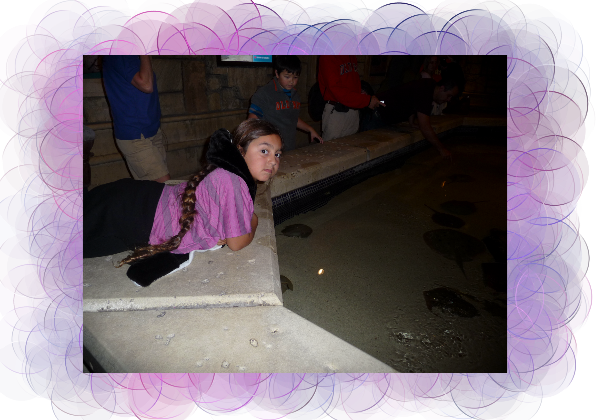

Net Art
For this project, I wanted to make something where you could visually understand what it is like to live with derealization and dissociation. All the photos I used I felt that they represented what a moment can look like for me. Sometimes life is blurry and I barely know what I am looking at. Other times I am looking at something normal but it will still feel off. All the photos are all either taken by me or they are old family photos. I used HTML in Notepad++ to create the piece.
Click here to visit the page.